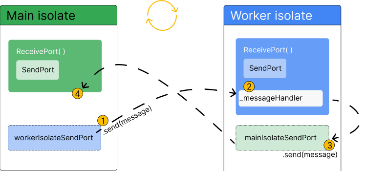

Isolates
This page discusses some examples that use the Isolate API to implement isolates.
You should use isolates whenever your application is handling computations that are large enough to temporarily block other computations. The most common example is in Flutter applications, when you need to perform large computations that might otherwise cause the UI to become unresponsive.
There aren't any rules about when you must use isolates, but here are some more situations where they can be useful:
- Parsing and decoding exceptionally large JSON blobs.
- Processing and compressing photos, audio and video.
- Converting audio and video files.
- Performing complex searching and filtering on large lists or within file systems.
- Performing I/O, such as communicating with a database.
- Handling a large volume of network requests.
Implementing a simple worker isolate
#These examples implement a main isolate that spawns a simple worker isolate. Isolate.run() simplifies the steps behind setting up and managing worker isolates:
- Spawns (starts and creates) an isolate.
- Runs a function on the spawned isolate.
- Captures the result.
- Returns the result to the main isolate.
- Terminates the isolate once work is complete.
- Checks, captures, and throws exceptions and errors back to the main isolate.
Running an existing method in a new isolate
#- Call
run()to spawn a new isolate (a background worker), directly in the main isolate whilemain()waits for the result:
const String filename = 'with_keys.json';
void main() async {
// Read some data.
final jsonData = await Isolate.run(_readAndParseJson);
// Use that data.
print('Number of JSON keys: ${jsonData.length}');
}- Pass the worker isolate the function you want it to execute as its first argument. In this example, it's the existing function
_readAndParseJson():
Future<Map<String, dynamic>> _readAndParseJson() async {
final fileData = await File(filename).readAsString();
final jsonData = jsonDecode(fileData) as Map<String, dynamic>;
return jsonData;
}Isolate.run()takes the result_readAndParseJson()returns and sends the value back to the main isolate, shutting down the worker isolate.The worker isolate transfers the memory holding the result to the main isolate. It does not copy the data. The worker isolate performs a verification pass to ensure the objects are allowed to be transferred.
_readAndParseJson() is an existing, asynchronous function that could just as easily run directly in the main isolate. Using Isolate.run() to run it instead enables concurrency. The worker isolate completely abstracts the computations of _readAndParseJson(). It can complete without blocking the main isolate.
The result of Isolate.run() is always a Future, because code in the main isolate continues to run. Whether the computation the worker isolate executes is synchronous or asynchronous doesn't impact the main isolate, because it's running concurrently either way.
For the complete program, check out the send_and_receive.dart sample.
Sending closures with isolates
#You can also create a simple worker isolate with run() using a function literal, or closure, directly in the main isolate.
const String filename = 'with_keys.json';
void main() async {
// Read some data.
final jsonData = await Isolate.run(() async {
final fileData = await File(filename).readAsString();
final jsonData = jsonDecode(fileData) as Map<String, dynamic>;
return jsonData;
});
// Use that data.
print('Number of JSON keys: ${jsonData.length}');
}This example accomplishes the same as the previous. A new isolate spawns, computes something, and sends back the result.
However, now the isolate sends a closure. Closures are less limited than typical named functions, both in how they function and how they're written into the code. In this example, Isolate.run() executes what looks like local code, concurrently. In that sense, you can imagine run() to work like a control flow operator for "run in parallel".
Sending multiple messages between isolates with ports
#Short-lived isolates are convenient to use, but require performance overhead to spawn new isolates and to copy objects from one isolate to another. If your code relies on repeatedly running the same computation using Isolate.run, you might improve performance by instead creating long-lived isolates that don’t exit immediately.
To do this, you can use some of the low-level isolate APIs that Isolate.run abstracts:
This section goes over the steps required to establish 2-way communication between a newly spawned isolate and the main isolate. The first example, Basic ports, introduces the process at a high-level. The second example, Robust ports, gradually adds more practical, real-world functionality to the first.
ReceivePort and SendPort
#Setting up long-lived communication between isolates requires two classes (in addition to Isolate): ReceivePort and SendPort. These ports are the only way isolates can communicate with each other.
A ReceivePort is an object that handles messages that are sent from other isolates. Those messages are sent via a SendPort.
Ports behave similarly to Stream objects (in fact, receive ports implement Stream!) You can think of a SendPort and ReceivePort like Stream's StreamController and listeners, respectively. A SendPort is like a StreamController because you "add" messages to them with the SendPort.send() method, and those messages are handled by a listener, in this case the ReceivePort. The ReceivePort then handles the messages it receives by passing them as arguments to a callback that you provide.
Setting up ports
#A newly spawned isolate only has the information it receives through the Isolate.spawn call. If you need the main isolate to continue to communicate with a spawned isolate past its initial creation, you must set up a communication channel where the spawned isolate can send messages to the main isolate. Isolates can only communicate via message passing. They can’t “see” inside each others’ memory, which is where the name “isolate” comes from.
To set up this 2-way communication, first create a ReceivePort in the main isolate, then pass its SendPort as an argument to the new isolate when spawning it with Isolate.spawn. The new isolate then creates its own ReceivePort, and sends its SendPort back on the SendPort it was passed by the main isolate. The main isolate receives this SendPort, and now both sides have an open channel to send and receive messages.
- Create a
ReceivePortin the main isolate. TheSendPortis created automatically as a property on theReceivePort. - Spawn the worker isolate with
Isolate.spawn() - Pass a reference to
ReceivePort.sendPortas the first message to the worker isolate. - Create another new
ReceivePortin the worker isolate. - Pass a reference to the worker isolate's
ReceivePort.sendPortas the first message back to the main isolate.
Along with creating the ports and setting up communication, you’ll also need to tell the ports what to do when they receive messages. This is done using the listen method on each respective ReceivePort.

- Send a message via the main isolate’s reference to the worker isolate's
SendPort. - Receive and handle the message via a listener on the worker isolate's
ReceivePort. This is where the computation you want to move off the main isolate is executed. - Send a return message via the worker isolate's reference to the main isolate's
SendPort. - Receive the message via a listener on the main isolate's
ReceivePort.
Basic ports example
#This example demonstrates how you can set up a long-lived worker isolate with 2-way communication between it and the main isolate. The code uses the example of sending JSON text to a new isolate, where the JSON will be parsed and decoded, before being sent back to the main isolate.
Step 1: Define the worker class
#First, create a class for your background worker isolate. This class contains all the functionality you need to:
- Spawn an isolate.
- Send messages to that isolate.
- Have the isolate decode some JSON.
- Send the decoded JSON back to the main isolate.
The class exposes two public methods: one that spawns the worker isolate, and one that handles sending messages to that worker isolate.
The remaining sections in this example will show you how to fill in the class methods, one-by-one.
class Worker {
Future<void> spawn() async {
// TODO: Add functionality to spawn a worker isolate.
}
void _handleResponsesFromIsolate(dynamic message) {
// TODO: Handle messages sent back from the worker isolate.
}
static void _startRemoteIsolate(SendPort port) {
// TODO: Define code that should be executed on the worker isolate.
}
Future<void> parseJson(String message) async {
// TODO: Define a public method that can
// be used to send messages to the worker isolate.
}
}Step 2: Spawn a worker isolate
#The Worker.spawn method is where you will group the code for creating the worker isolate and ensuring it can receive and send messages.
- First, create a
ReceivePort. This allows the main isolate to receive messages sent from the newly spawned worker isolate. - Next, add a listener to the receive port to handle messages the worker isolate will send back. The callback passed to the listener,
_handleResponsesFromIsolate, will be covered in step 4. - Finally, spawn the worker isolate with
Isolate.spawn. It expects two arguments: a function to be executed on the worker isolate (covered in step 3), and thesendPortproperty of the receive port.
Future<void> spawn() async {
final receivePort = ReceivePort();
receivePort.listen(_handleResponsesFromIsolate);
await Isolate.spawn(_startRemoteIsolate, receivePort.sendPort);
}The receivePort.sendPort argument will be passed to the callback (_startRemoteIsolate) as an argument when it’s called on the worker isolate. This is the first step in ensuring that the worker isolate has a way to send messages back to the main isolate.
Step 3: Execute code on the worker isolate
#In this step, you define the method _startRemoteIsolate that is sent to the worker isolate to be executed when it spawns. This method is like the “main” method for the worker isolate.
- First, create another new
ReceivePort. This port receives future messages from the main isolate. - Next, send that port’s
SendPortback to the main isolate. - Finally, add a listener to the new
ReceivePort. This listener handles messages the main isolate sends to the worker isolate.
static void _startRemoteIsolate(SendPort port) {
final receivePort = ReceivePort();
port.send(receivePort.sendPort);
receivePort.listen((dynamic message) async {
if (message is String) {
final transformed = jsonDecode(message);
port.send(transformed);
}
});
}The listener on the worker’s ReceivePort decodes the JSON passed from the main isolate, and then sends the decoded JSON back to the main isolate.
This listener is the entry point for messages sent from the main isolate to the worker isolate. This is the only chance you have to tell the worker isolate what code to execute in the future.
Step 4: Handle messages on the main isolate
#Finally, you need to tell the main isolate how to handle messages sent from the worker isolate back to the main isolate. To do so, you need to fill in the _handleResponsesFromIsolate method. Recall that this method is passed to the receivePort.listen method, as described in step 2:
Future<void> spawn() async {
final receivePort = ReceivePort();
receivePort.listen(_handleResponsesFromIsolate);
await Isolate.spawn(_startRemoteIsolate, receivePort.sendPort);
}Also recall that you sent a SendPort back to the main isolate in step 3. This method handles the receipt of that SendPort, as well as handling future messages (which will be decoded JSON).
- First, check if the message is a
SendPort. If so, assign that port to the class's_sendPortproperty so it can be used to send messages later. - Next, check if the message is of type
Map<String, dynamic>, the expected type of decoded JSON. If so, handle that message with your application-specific logic. In this example, the message is printed.
void _handleResponsesFromIsolate(dynamic message) {
if (message is SendPort) {
_sendPort = message;
_isolateReady.complete();
} else if (message is Map<String, dynamic>) {
print(message);
}
}Step 5: Add a completer to ensure your isolate is set-up
#To complete the class, define a public method called parseJson, which is responsible for sending messages to the worker isolate. It also needs to ensure that messages can be sent before the isolate is fully set up. To handle this, use a Completer.
- First, add a class-level property called a
Completerand name it_isolateReady. - Next, add a call to
complete()on the completer in the_handleResponsesFromIsolatemethod (created in step 4) if the message is aSendPort. - Finally, in the
parseJsonmethod, addawait _isolateReady.futurebefore adding_sendPort.send. This ensures that no message can be sent to the worker isolate until it is spawned and has sent itsSendPortback to the main isolate.
Future<void> parseJson(String message) async {
await _isolateReady.future;
_sendPort.send(message);
}Complete example
#Expand to see the complete example
import 'dart:async';
import 'dart:convert';
import 'dart:isolate';
void main() async {
final worker = Worker();
await worker.spawn();
await worker.parseJson('{"key":"value"}');
}
class Worker {
late SendPort _sendPort;
final Completer<void> _isolateReady = Completer.sync();
Future<void> spawn() async {
final receivePort = ReceivePort();
receivePort.listen(_handleResponsesFromIsolate);
await Isolate.spawn(_startRemoteIsolate, receivePort.sendPort);
}
void _handleResponsesFromIsolate(dynamic message) {
if (message is SendPort) {
_sendPort = message;
_isolateReady.complete();
} else if (message is Map<String, dynamic>) {
print(message);
}
}
static void _startRemoteIsolate(SendPort port) {
final receivePort = ReceivePort();
port.send(receivePort.sendPort);
receivePort.listen((dynamic message) async {
if (message is String) {
final transformed = jsonDecode(message);
port.send(transformed);
}
});
}
Future<void> parseJson(String message) async {
await _isolateReady.future;
_sendPort.send(message);
}
}Robust ports example
#The previous example explained the basic building blocks needed to set up a long-lived isolate with two-way communication. As mentioned, that example lacks some important features, such as error handling, the ability to close the ports when they’re no longer in use, and inconsistencies around message ordering in some situations.
This example expands on the information in the first example by creating a long-lived worker isolate that has these additional features and more, and follows better design patterns. Although this code has similarities to the first example, it is not an extension of that example.
Step 1: Define the worker class
#First, create a class for your background worker isolate. This class contains all the functionality you need to:
- Spawn an isolate.
- Send messages to that isolate.
- Have the isolate decode some JSON.
- Send the decoded JSON back to the main isolate.
The class exposes three public methods: one that creates the worker isolate, one that handles sending messages to that worker isolate, and one that can shut down the ports when they’re no longer in use.
class Worker {
final SendPort _commands;
final ReceivePort _responses;
Future<Object?> parseJson(String message) async {
// TODO: Ensure the port is still open.
_commands.send(message);
}
static Future<Worker> spawn() async {
// TODO: Add functionality to create a new Worker object with a
// connection to a spawned isolate.
throw UnimplementedError();
}
Worker._(this._responses, this._commands) {
// TODO: Initialize main isolate receive port listener.
}
void _handleResponsesFromIsolate(dynamic message) {
// TODO: Handle messages sent back from the worker isolate.
}
static void _handleCommandsToIsolate(ReceivePort rp, SendPort sp) async {
// TODO: Handle messages sent back from the worker isolate.
}
static void _startRemoteIsolate(SendPort sp) {
// TODO: Initialize worker isolate's ports.
}
}Step 2: Create a RawReceivePort in the Worker.spawn method
#Before spawning an isolate, you need to create a RawReceivePort, which is a lower-level ReceivePort. Using RawReceivePort is a preferred pattern because it allows you to separate your isolate startup logic from logic that handles message passing on the isolate.
In the Worker.spawn method:
- First, create the
RawReceivePort. ThisReceivePortis only responsible for receiving the initial message from the worker isolate, which will be aSendPort. - Next, create a
Completerthat will indicate when the isolate is ready to receive messages. When this completes, it will return a record with aReceivePortand aSendPort. - Next, define the
RawReceivePort.handlerproperty. This property is aFunction?that behaves likeReceivePort.listener. The function is called when a message is received by this port. - Within the handler function, call
connection.complete(). This method expects a record with aReceivePortand aSendPortas an argument. TheSendPortis the initial message sent from the worker isolate, which will be assigned in the next step to the class levelSendPortnamed_commands. - Then, create a new
ReceivePortwith theReceivePort.fromRawReceivePortconstructor, and pass in theinitPort.
class Worker {
final SendPort _commands;
final ReceivePort _responses;
static Future<Worker> spawn() async {
// Create a receive port and add its initial message handler.
final initPort = RawReceivePort();
final connection = Completer<(ReceivePort, SendPort)>.sync();
initPort.handler = (initialMessage) {
final commandPort = initialMessage as SendPort;
connection.complete((
ReceivePort.fromRawReceivePort(initPort),
commandPort,
));
};
// ···
}By creating a RawReceivePort first, and then a ReceivePort, you’ll be able to add a new callback to ReceivePort.listen later on. Conversely, if you were to create a ReceivePort straight away, you’d only be able to add one listener, because ReceivePort implements Stream, rather than BroadcastStream.
Effectively, this allows you to separate your isolate start-up logic from the logic that handles receiving messages after setting up communication is complete. This benefit will become more obvious as the logic in the other methods grows.
Step 3: Spawn a worker isolate with Isolate.spawn
#This step continues to fill in the Worker.spawn method. You’ll add the code needed to spawn an isolate, and return an instance of Worker from this class. In this example, the call to Isolate.spawn is wrapped in a try/catch block, which ensures that, if the isolate fails to start up, the initPort will be closed, and the Worker object won’t be created.
- First, attempt to spawn a worker isolate in a
try/catchblock. If spawning a worker isolate fails, close the receive port that was created in the previous step. The method passed toIsolate.spawnwill be covered in a later step. - Next, await the
connection.future, and destructure the send port and receive port from the record it returns. - Finally, return an instance of
Workerby calling its private constructor, and passing in the ports from that completer.
class Worker {
final SendPort _commands;
final ReceivePort _responses;
static Future<Worker> spawn() async {
// Create a receive port and add its initial message handler
final initPort = RawReceivePort();
final connection = Completer<(ReceivePort, SendPort)>.sync();
initPort.handler = (initialMessage) {
final commandPort = initialMessage as SendPort;
connection.complete((
ReceivePort.fromRawReceivePort(initPort),
commandPort,
));
};
// Spawn the isolate.
try {
await Isolate.spawn(_startRemoteIsolate, (initPort.sendPort));
} on Object {
initPort.close();
rethrow;
}
final (ReceivePort receivePort, SendPort sendPort) =
await connection.future;
return Worker._(receivePort, sendPort);
}Note that in this example (compared to the previous example), Worker.spawn acts as an asynchronous static constructor for this class and is the only way to create an instance of Worker. This simplifies the API, making the code that creates an instance of Worker cleaner.
Step 4: Complete the isolate setup process
#In this step, you will complete the basic isolate setup process. This correlates almost entirely to the previous example, and there are no new concepts. There is a slight change in that the code is broken into more methods, which is a design practice that sets you up for adding more functionality through the remainder of this example. For an in-depth walkthrough of the basic process of setting up an isolate, see the basic ports example.
First, create the private constructor that is returned from the Worker.spawn method. In the constructor body, add a listener to the receive port used by the main isolate, and pass an as-yet undefined method to that listener called _handleResponsesFromIsolate.
class Worker {
final SendPort _commands;
final ReceivePort _responses;
// ···
Worker._(this._responses, this._commands) {
_responses.listen(_handleResponsesFromIsolate);
}Next, add the code to _startRemoteIsolate that is responsible for initializing the ports on the worker isolate. Recall that this method was passed to Isolate.spawn in the Worker.spawn method, and it will be passed the main isolate’s SendPort as an argument.
- Create a new
ReceivePort. - Send that port’s
SendPortback to the main isolate. - Call a new method called
_handleCommandsToIsolate, and pass both the newReceivePortandSendPortfrom the main isolate as arguments.
static void _startRemoteIsolate(SendPort sendPort) {
final receivePort = ReceivePort();
sendPort.send(receivePort.sendPort);
_handleCommandsToIsolate(receivePort, sendPort);
}Next, add the _handleCommandsToIsolate method, which is responsible for receiving messages from the main isolate, decoding json on the worker isolate, and sending the decoded json back as a response.
- First, declare a listener on the worker isolate’s
ReceivePort. - Within the callback added to the listener, attempt to decode the JSON passed from the main isolate within a
try/catchblock. If decoding is successful, send the decoded JSON back to the main isolate. - If there is an error, send back a
RemoteError.
static void _handleCommandsToIsolate(
ReceivePort receivePort, SendPort sendPort) {
receivePort.listen((message) {
try {
final jsonData = jsonDecode(message as String);
sendPort.send(jsonData);
} catch (e) {
sendPort.send(RemoteError(e.toString(), ''));
}
});
}Next, add the code for the _handleResponsesFromIsolate method.
- First, check if the message is a
RemoteError, in which case you shouldthrowthat error. - Otherwise, print the message. In future steps, you will update this code to return messages rather than print them.
void _handleResponsesFromIsolate(dynamic message) {
if (message is RemoteError) {
throw message;
} else {
print(message);
}
}Finally, add the parseJson method, which is a public method that allows outside code to send JSON to the worker isolate to be decoded.
Future<Object?> parseJson(String message) async {
_commands.send(message);
}You will update this method in the next step.
Step 5: Handle multiple messages at the same time
#Currently, if you rapidly send messages to the worker isolate, the isolate will send the decoded json response in the order that they complete, rather than the order that they’re sent. You have no way to determine which response corresponds to which message.
In this step, you’ll fix this problem by giving each message an id, and using Completer objects to ensure that when outside code calls parseJson the response that is returned to that caller is the correct response.
First, add two class-level properties to Worker:
Map<int, Completer<Object?>> _activeRequestsint _idCounter
class Worker {
final SendPort _commands;
final ReceivePort _responses;
final Map<int, Completer<Object?>> _activeRequests = {};
int _idCounter = 0;The _activeRequests map associates a message sent to the worker isolate with a Completer. The keys used in _activeRequests are taken from _idCounter, which will be increased as more messages are sent.
Next, update the parseJson method to create completers before it sends messages to the worker isolate.
- First create a
Completer. - Next, increment
_idCounter, so that eachCompleteris associated with a unique number. - Add an entry to the
_activeRequestsmap in which the key is the current number of_idCounter, and the completer is the value. - Send the message to the worker isolate, along with the id. Because you can only send one value through the
SendPort, wrap the id and message in a record. - Finally, return the completer’s future, which will eventually contain the response from the worker isolate.
Future<Object?> parseJson(String message) async {
final completer = Completer<Object?>.sync();
final id = _idCounter++;
_activeRequests[id] = completer;
_commands.send((id, message));
return await completer.future;
}You also need to update _handleResponsesFromIsolate and _handleCommandsToIsolate to handle this system.
In _handleCommandsToIsolate, you need to account for the message being a record with two values, rather than just the json text. Do so by destructuring the values from message.
Then, after decoding the json, update the call to sendPort.send to pass both the id and the decoded json back to the main isolate, again using a record.
static void _handleCommandsToIsolate(
ReceivePort receivePort, SendPort sendPort) {
receivePort.listen((message) {
final (int id, String jsonText) = message as (int, String); // New
try {
final jsonData = jsonDecode(jsonText);
sendPort.send((id, jsonData)); // Updated
} catch (e) {
sendPort.send((id, RemoteError(e.toString(), '')));
}
});
}Finally, update the _handleResponsesFromIsolate.
- First, destructure the id and the response from the message argument again.
- Then, remove the completer that corresponds to this request from the
_activeRequestsmap. - Lastly, rather than throwing an error or printing the decoded json, complete the completer, passing in the response. When this completes, the response will be returned to the code that called
parseJsonon the main isolate.
void _handleResponsesFromIsolate(dynamic message) {
final (int id, Object? response) = message as (int, Object?); // New
final completer = _activeRequests.remove(id)!; // New
if (response is RemoteError) {
completer.completeError(response); // Updated
} else {
completer.complete(response); // Updated
}
}Step 6: Add functionality to close the ports
#When the isolate is no longer being used by your code, you should close the ports on the main isolate and the worker isolate.
- First, add a class-level boolean that tracks if the ports are closed.
- Then, add the
Worker.closemethod. Within this method:- Update
_closedto be true. - Send a final message to the worker isolate. This message is a
Stringthat reads “shutdown”, but it could be any object you’d like. You will use it in the next code snippet.
- Update
- Finally, check if
_activeRequestsis empty. If it is, close down the main isolate’sReceivePortnamed_responses.
class Worker {
bool _closed = false;
// ···
void close() {
if (!_closed) {
_closed = true;
_commands.send('shutdown');
if (_activeRequests.isEmpty) _responses.close();
print('--- port closed --- ');
}
}- Next, you need to handle the “shutdown” message in the worker isolate. Add the following code to the
_handleCommandsToIsolatemethod. This code will check if the message is aStringthat reads “shutdown”. If it is, it will close the worker isolate’sReceivePort, and return.
static void _handleCommandsToIsolate(
ReceivePort receivePort,
SendPort sendPort,
) {
receivePort.listen((message) {
// New if-block.
if (message == 'shutdown') {
receivePort.close();
return;
}
final (int id, String jsonText) = message as (int, String);
try {
final jsonData = jsonDecode(jsonText);
sendPort.send((id, jsonData));
} catch (e) {
sendPort.send((id, RemoteError(e.toString(), '')));
}
});
}- Finally, you should add code to check if the ports are closed before trying to send messages. Add one line in the
Worker.parseJsonmethod.
Future<Object?> parseJson(String message) async {
if (_closed) throw StateError('Closed'); // New
final completer = Completer<Object?>.sync();
final id = _idCounter++;
_activeRequests[id] = completer;
_commands.send((id, message));
return await completer.future;
}Complete example
#Expand here to see the full example
import 'dart:async';
import 'dart:convert';
import 'dart:isolate';
void main() async {
final worker = await Worker.spawn();
print(await worker.parseJson('{"key":"value"}'));
print(await worker.parseJson('"banana"'));
print(await worker.parseJson('[true, false, null, 1, "string"]'));
print(
await Future.wait([worker.parseJson('"yes"'), worker.parseJson('"no"')]));
worker.close();
}
class Worker {
final SendPort _commands;
final ReceivePort _responses;
final Map<int, Completer<Object?>> _activeRequests = {};
int _idCounter = 0;
bool _closed = false;
Future<Object?> parseJson(String message) async {
if (_closed) throw StateError('Closed');
final completer = Completer<Object?>.sync();
final id = _idCounter++;
_activeRequests[id] = completer;
_commands.send((id, message));
return await completer.future;
}
static Future<Worker> spawn() async {
// Create a receive port and add its initial message handler
final initPort = RawReceivePort();
final connection = Completer<(ReceivePort, SendPort)>.sync();
initPort.handler = (initialMessage) {
final commandPort = initialMessage as SendPort;
connection.complete((
ReceivePort.fromRawReceivePort(initPort),
commandPort,
));
};
// Spawn the isolate.
try {
await Isolate.spawn(_startRemoteIsolate, (initPort.sendPort));
} on Object {
initPort.close();
rethrow;
}
final (ReceivePort receivePort, SendPort sendPort) =
await connection.future;
return Worker._(receivePort, sendPort);
}
Worker._(this._responses, this._commands) {
_responses.listen(_handleResponsesFromIsolate);
}
void _handleResponsesFromIsolate(dynamic message) {
final (int id, Object? response) = message as (int, Object?);
final completer = _activeRequests.remove(id)!;
if (response is RemoteError) {
completer.completeError(response);
} else {
completer.complete(response);
}
if (_closed && _activeRequests.isEmpty) _responses.close();
}
static void _handleCommandsToIsolate(
ReceivePort receivePort,
SendPort sendPort,
) {
receivePort.listen((message) {
if (message == 'shutdown') {
receivePort.close();
return;
}
final (int id, String jsonText) = message as (int, String);
try {
final jsonData = jsonDecode(jsonText);
sendPort.send((id, jsonData));
} catch (e) {
sendPort.send((id, RemoteError(e.toString(), '')));
}
});
}
static void _startRemoteIsolate(SendPort sendPort) {
final receivePort = ReceivePort();
sendPort.send(receivePort.sendPort);
_handleCommandsToIsolate(receivePort, sendPort);
}
void close() {
if (!_closed) {
_closed = true;
_commands.send('shutdown');
if (_activeRequests.isEmpty) _responses.close();
print('--- port closed --- ');
}
}
}Unless stated otherwise, the documentation on this site reflects Dart 3.6.0. Page last updated on 2024-11-17. View source or report an issue.